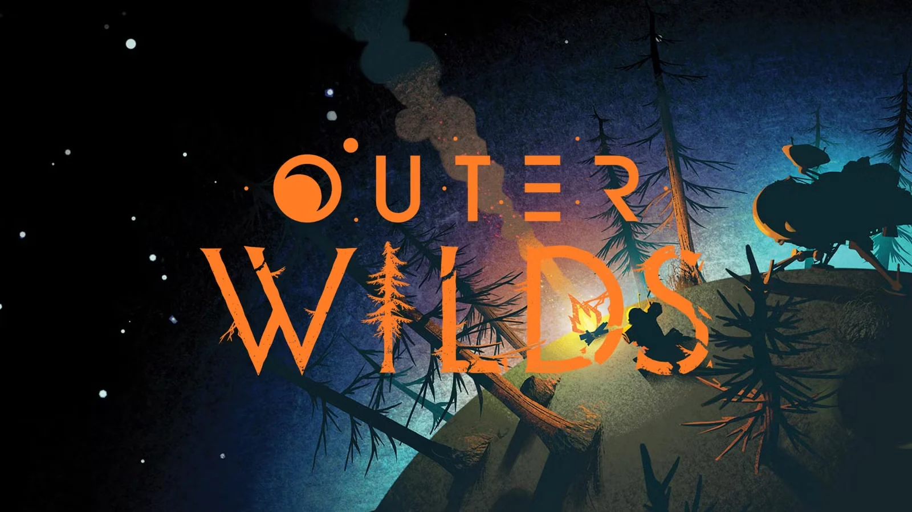
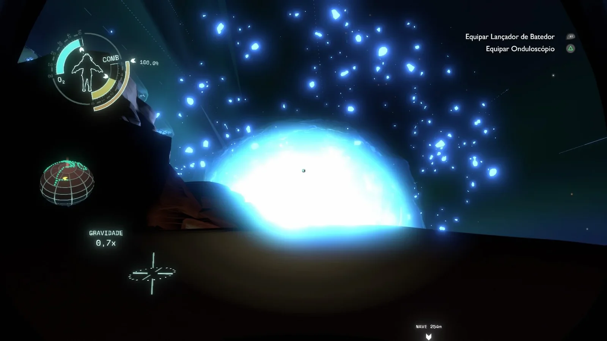
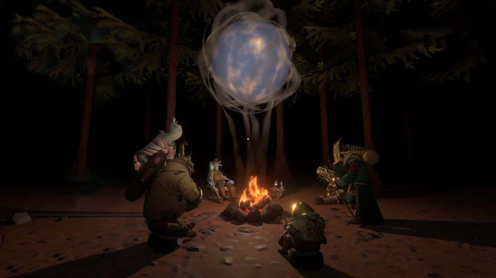

Why a 22-Minute Loop Can Feel Bigger Than an Open World

I’ve played plenty of games that try to impress me with size: bigger maps, more quests, more loot, more upgrades. Outer Wilds did something completely different. It gave me a tiny slice of time, told me it would end no matter what I did, and somehow made me feel more free than most “open world” games ever have.
That’s the design question I can’t stop thinking about:
Why does a fixed-length time loop feel so attractive? Why is repeating the same time window not boring—sometimes even addictive?
At first, I thought the loop was just a clever gimmick. Then I realized the loop changes what “progress” means. In Outer Wilds, I don’t really get stronger. I don’t grind for better gear. Most of the time, I die and come back with nothing. And yet I’m still moving forward—because the thing that grows is not my character, it’s my understanding.

That shift is powerful. In many games, failure feels like losing. In Outer Wilds, failure often feels like data. I didn’t “waste” a run—I ran an experiment. I learned what happens when I arrive earlier, or when I wait, or when I take a different path. The reset stops being a punishment and becomes a rhythm: try, observe, revise.
The time limit also does something subtle to my attention. When I know I only have a short window, I stop wandering aimlessly. I start caring about minutes. I start making plans. It’s not just “where should I go,” but “what can I realistically learn before the world resets?” That pressure could have been stressful, but for me it often becomes focus. I’m not drowning in infinite options. I’m choosing one question to chase right now.
And the best part is the feeling of a real breakthrough. The kind of moment where you’re not following a waypoint—you’re connecting dots in your head. You read something, you see something, you remember something from three loops ago, and suddenly the world makes sense in a new way. It’s a very specific pleasure: the pleasure of understanding, not collecting.
That’s why the loop doesn’t feel like repetition to me. The planet may repeat, but I don’t. Each loop is like rewatching the same scene with new context: the same events, but a different interpretation. The world becomes a clockwork system, and I’m slowly learning how it ticks.
What makes this even more memorable is how well the mechanic matches the theme.

Outer Wilds is a story about curiosity across an impossible scale of time—different civilizations, ruins, endings you cannot prevent, questions that outlive you. The loop makes those ideas emotional instead of abstract. I don’t just read that time is unstoppable—I feel it every run. And strangely, that doesn’t make the experience hopeless. It makes it meaningful. Because if the ending is guaranteed, then the value shifts to the act of seeking truth anyway.
So if I had to summarize why fixed-time loops work (at least for me), it’s this:
A good time loop turns repetition into intention.
It turns failure into learning.
And it turns exploration into understanding.
I’m curious how other players feel. Do you like time loops because they’re efficient and structured, or because they create that “aha” feeling? And what was your most unforgettable Outer Wilds moment—the moment you realized you weren’t just exploring space, you were learning a system?